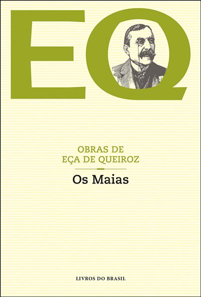

Eça de Queirós · 1888 · Romance
Género:Realismo, Crítica Social
Opinião:Uma obra incontornável da literatura portuguesa, com personagens inesquecíveis e uma crítica certeira à sociedade oitocentista.
★★★★★
